ANNA ATHINA · B-FACADE-A-SUPPORT-SUCCESSOR · 2026-09-27
Latest architectural review.
Paired B-end door openings and continuous 2B curved finish. One verified A support artefact removed; the nearby corner pier remains unchanged as unresolved. J1, private path, W2, P1 and four nook ends remain preserved. Human approval pending. The approved ramp, construction journey and cinematic handover are preserved.
Temporary public human-review copy. Not the production Raysons website. Source drawings and original site photographs are deliberately excluded.
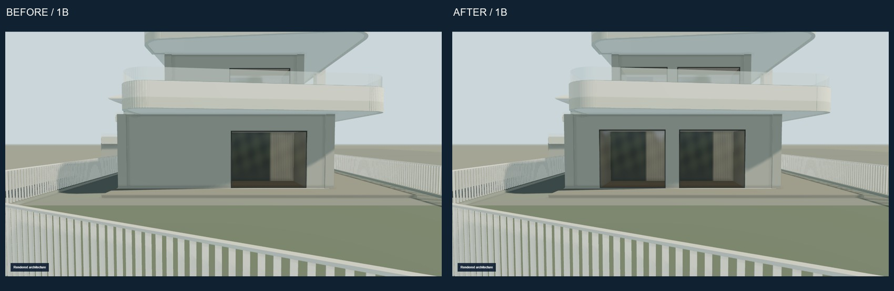
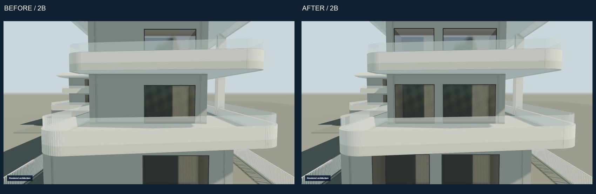
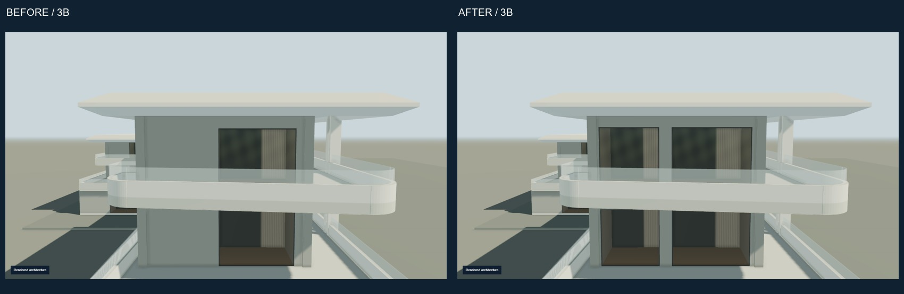
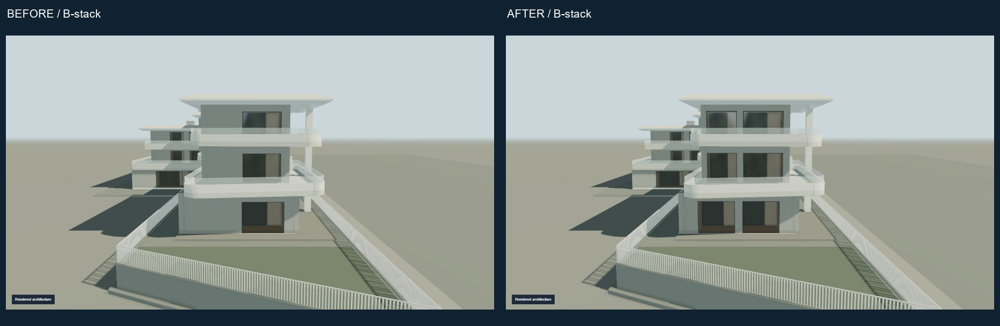
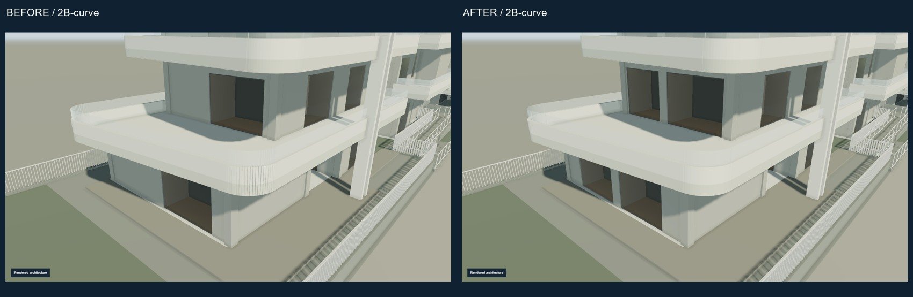
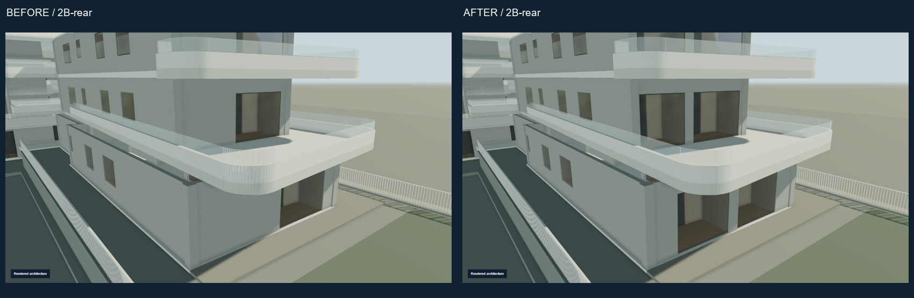
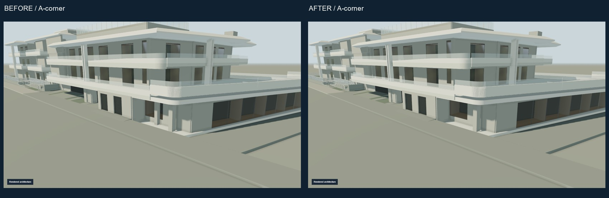

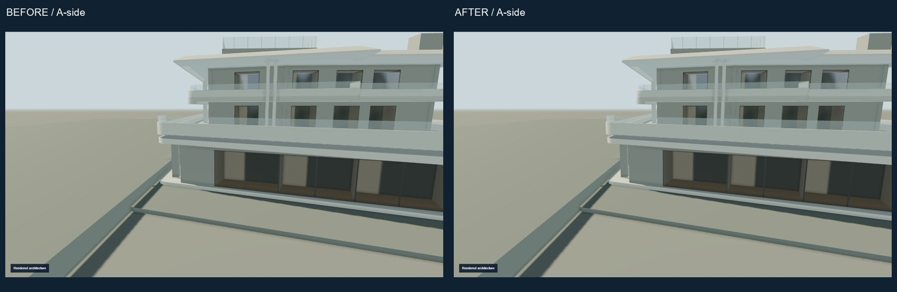
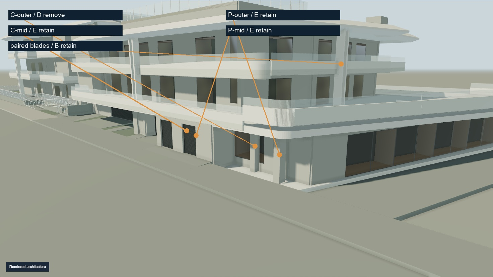
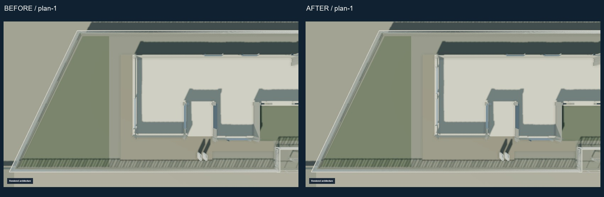
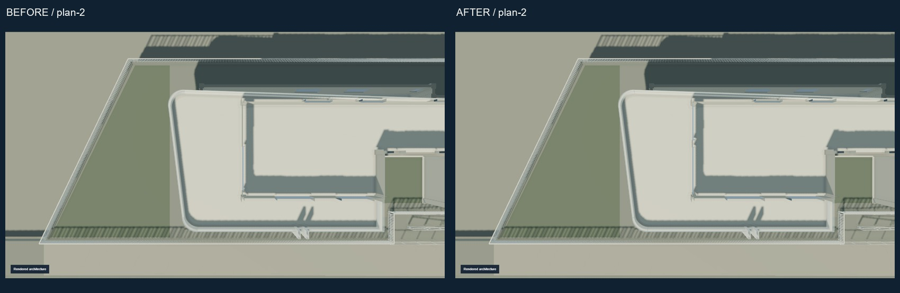
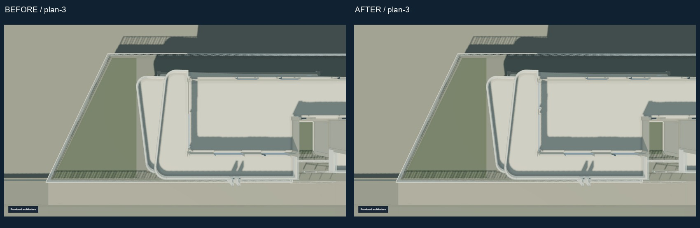


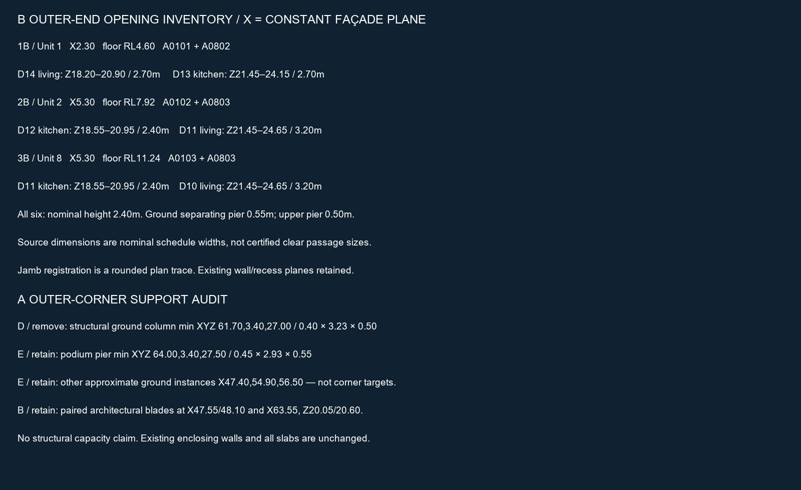
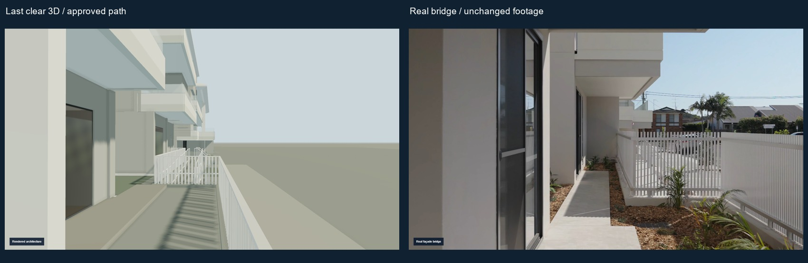